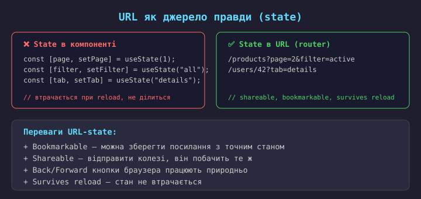
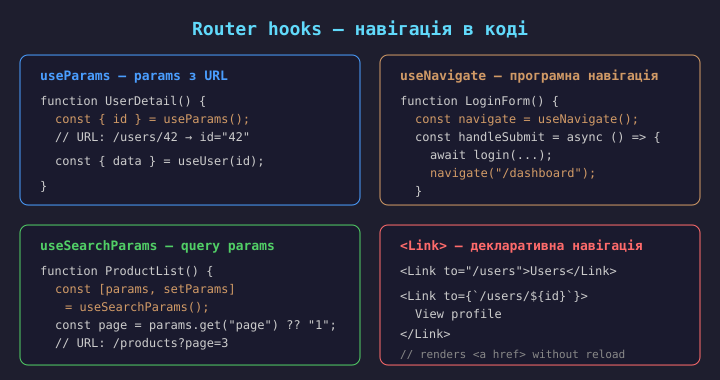
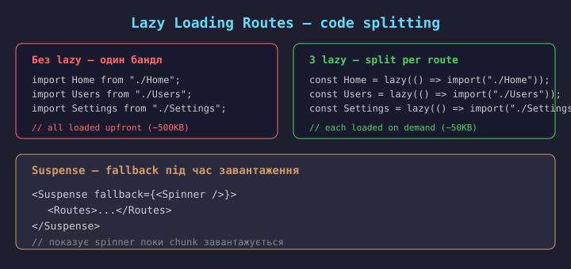
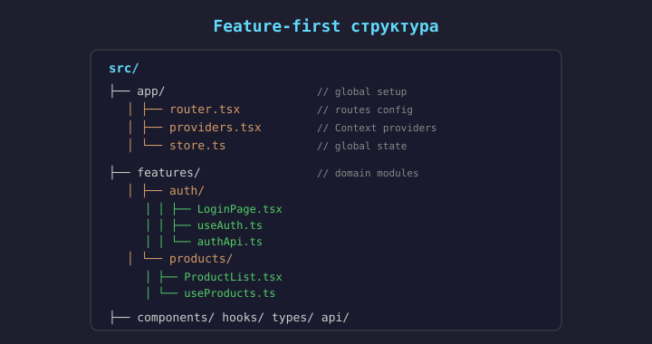
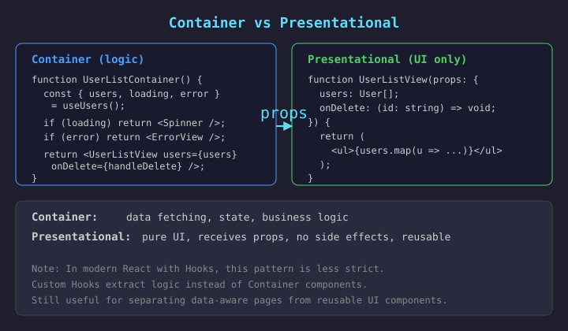
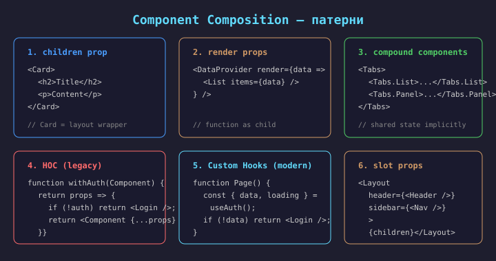

SPA vs MPA — навігація

SPA (Single-Page Application) — застосунок завантажується один раз, далі навігація відбувається без перезавантаження сторінки.
Маршрутизація (routing) — механізм, що зіставляє URL-адресу з відповідним компонентом для відображення.
Як це працює:
pushState);React не має вбудованого роутера — використовується React Router (de-facto стандарт) або Next.js File-based routing.


React Router — декларативна маршрутизація через компоненти.
<BrowserRouter> — обгортає застосунок, використовує HTML5 History API;<Routes> — контейнер для списку маршрутів;<Route> — зіставляє URL-шлях з компонентом;<Link> — посилання без перезавантаження (renders <a>);<Outlet> — місце, де рендеряться дочірні маршрути (nested);<Navigate> — програмний редирект.Встановлення: npm install react-router-dom
Версія: React Router v6 (data API в v6.4+, loader/action в v7).
// JSX-стиль (декларативний) import { BrowserRouter, Routes, Route, Link } from "react-router-dom"; function App() { return ( <BrowserRouter> <nav> <Link to="/">Home</Link> <Link to="/users">Users</Link> </nav> <Routes> <Route path="/" element={<Home />} /> <Route path="/users" element={<UserList />} /> <Route path="*" element={<NotFound />} /> </Routes> </BrowserRouter> ); }
// Data API стиль (v6.4+, рекомендований) import { createBrowserRouter, RouterProvider } from "react-router-dom"; const router = createBrowserRouter([ { path: "/", element: <Home /> }, { path: "/users", element: <UserList />, loader: usersLoader // data fetching }, { path: "*", element: <NotFound /> }, ]); function App() { return <RouterProvider router={router} />; } // Переваги data API: // - loader/action для data fetching // - error boundaries per route // - prefetching на наведенні

// Конфігурація маршруту з параметром <Route path="/users/:id" element={<UserDetail />} /> // Отримання параметра в компоненті import { useParams } from "react-router-dom"; function UserDetail() { const { id } = useParams(); // URL: /users/42 → id = "42" const { data, loading } = useUser(id); if (loading) return <Spinner />; return <div>{data.name}</div>; }
Route params — динамічні сегменти URL,
що стають доступні через useParams().
Синтаксис: :paramName в шляху.
Приклади:
/users/:id → /users/42/posts/:slug → /posts/hello-world/products/:category/:id → /products/electronics/5Optional params — через
? (React Router v6.4+):
/posts/:id? → /posts, /posts/42
import { useSearchParams } from "react-router-dom"; function ProductList() { const [params, setParams] = useSearchParams(); const page = parseInt(params.get("page") ?? "1"); const filter = params.get("filter") ?? "all"; const goToPage = (p: number) => { setParams({ page: String(p), filter }); }; // URL: /products?page=3&filter=active return ( <> <Filter value={filter} /> <List page={page} /> <Pagination current={page} onPageChange={goToPage} /> </> ); }
Query params — параметри після ? в URL.
Призначення:
?page=3);?category=books);?sort=price);?q=react);useSearchParams повертає
URLSearchParams-об'єкт + setter.
Зміна query → URL оновлюється, компонент перерендериться.
Перевага: стан фільтра в URL — bookmarkable + shareable.

// Layout-компонент з Outlet — місце для дочірніх маршрутів function Layout() { return ( <div> <Header /> // спільний для всіх дочірніх сторінок <Nav /> // спільна навігація <main> <Outlet /> // тут рендериться активний дочірній маршрут </main> <Footer /> // спільний футер </div> ); } // Конфігурація з вкладеними маршрутами <Routes> <Route path="/" element={<Layout />}> <Route index element={<Home />} /> // index — дефолтна сторінка ("/") <Route path="users" element={<UserList />} /> <Route path="users/:id" element={<UserDetail />} /> <Route path="settings" element={<Settings />} /> </Route> <Route path="/login" element={<Login />} /> // без Layout <Route path="*" element={<NotFound />} /> </Routes>
Outlet — «слот» куди вставляється активний дочірній маршрут. index — сторінка за замовчуванням для батьківського шляху. Layout не перерендериться при зміні дочірнього маршруту.
// Кілька рівнів вкладеності <Route path="/dashboard" element={<DashboardLayout />}> <Route index element={<DashboardHome />} /> <Route path="users" element={<UsersLayout />}> <Route index element={<UserList />} /> <Route path=":id" element={<UserDetail />} /> <Route path=":id/edit" element={<EditUser />} /> </Route> <Route path="settings" element={<Settings />} /> </Route> // URL → рендериться: // /dashboard → Layout → DashboardHome // /dashboard/users → Layout → UsersLayout → UserList // /dashboard/users/42 → Layout → UsersLayout → UserDetail // /dashboard/users/42/edit→ Layout → UsersLayout → EditUser
Переваги вкладених маршрутів:
Аналог у Vue Router — <router-view> + nested routes.

// components/ProtectedRoute.tsx import { Navigate, useLocation } from "react-router-dom"; import { useAuth } from "../hooks/useAuth"; export function ProtectedRoute( { children }: { children: ReactNode } ) { const { isAuthenticated } = useAuth(); const location = useLocation(); if (!isAuthenticated) { // зберігаємо URL для повернення після login return <Navigate to="/login" state={ from: location } replace />; } return <>{children}</>; }
// Використання в Routes <Routes> <Route path="/login" element={<Login />} /> <Route path="/dashboard" element={ <ProtectedRoute> <DashboardLayout /> </ProtectedRoute> }> <Route index element={<DashboardHome />} /> <Route path="users" element={<UserList />} /> <Route path="settings" element={<Settings />} /> </Route> </Routes> // Після login — повернення на запитану сторінку const location = useLocation(); const from = location.state?.from?.pathname || "/dashboard"; <Navigate to={from} replace />
Navigate replace — замінює запис в історії, щоб Back не повернув на /login. location.state — передаємо URL для повернення після login.
// ProtectedRoute з перевіркою ролі export function ProtectedRoute({ children, roles = [] }: { children: ReactNode; roles?: string[]; // ["admin", "editor"] }) { const { user, isAuthenticated } = useAuth(); const location = useLocation(); if (!isAuthenticated) return <Navigate to="/login" state={ from: location } replace />; if (roles.length > 0 && !roles.includes(user.role)) return <Navigate to="/forbidden" replace />; return <>{children}</>; } // Використання <Route path="/admin" element={ <ProtectedRoute roles=["admin"]> <AdminPanel /> </ProtectedRoute> } />

import { lazy, Suspense } from "react"; import { BrowserRouter, Routes, Route } from "react-router-dom"; // Lazy import — кожна сторінка окремий chunk const Home = lazy(() => import("./pages/Home")); const UserList = lazy(() => import("./pages/UserList")); const Settings = lazy(() => import("./pages/Settings")); function App() { return ( <BrowserRouter> <Suspense fallback={<PageLoader />}> <Routes> <Route path="/" element={<Home />} /> <Route path="/users" element={<UserList />} /> <Route path="/settings" element={<Settings />} /> </Routes> </Suspense> </BrowserRouter> ); }
React.lazy — динамічний import, створює окремий JS-chunk.
Suspense — показує fallback під час завантаження chunk-а.
Переваги:
Важливо: Suspense обгортає
всі lazy-компоненти.
Vite/Webpack автоматично створюють chunks
для import().
// Catch-all маршрут — має бути останнім <Routes> <Route path="/" element={<Home />} /> <Route path="/users" element={<UserList />} /> <Route path="*" element={<NotFound />} /> </Routes> function NotFound() { return ( <div> <h1>404 — Page Not Found</h1> <Link to="/">Go home</Link> </div> ); }
path="*" — catch-all, спрацьовує
якщо жоден маршрут не збігся.
Має бути останнім у списку маршрутів.
Може показувати:
Error Boundary per route (data API):
errorElement на Route —
для помилок loader/action.

| Шар | Відповідальність | Приклад |
|---|---|---|
| App | Глобальна конфігурація, провайдери | RouterProvider, ThemeContext, ErrorBoundary |
| Layout | Спільна оболонка сторінок | Header, Nav, Footer + Outlet |
| Pages | Сторінки, маршрути | HomePage, UserListPage, SettingsPage |
| Features | Доменна логіка (feature-first) | auth/, products/, orders/ |
| Components | Перевикористовуваний UI | Button, Modal, Input, Card |
| Hooks | Спільна stateful-логіка | useUsers, useDebounce, useAuth |
| API | HTTP-клієнт, endpoint-функції | apiClient, usersApi, productsApi |
| Types | TypeScript-типи, DTO | User, Product, CreateUserDTO |

Type-first (за типом файлу):
src/ ├── components/ │ ├── LoginForm.tsx │ ├── ProductList.tsx │ └── ProductDetail.tsx ├── hooks/ │ ├── useAuth.ts │ └── useProducts.ts ├── api/ │ ├── authApi.ts │ └── productsApi.ts
Файли одного домена розкидані.
Підходить для невеликих проєктів.
Feature-first (за доменом):
src/ ├── features/ │ ├── auth/ │ │ ├── LoginForm.tsx │ │ ├── useAuth.ts │ │ └── authApi.ts │ └── products/ │ ├── ProductList.tsx │ ├── ProductDetail.tsx │ ├── useProducts.ts │ └── productsApi.ts
Все для домена — в одній папці.
Підходить для середніх/великих проєктів.

// Логіка в Custom Hook export function useUsers() { const [users, setUsers] = useState([]); const [loading, setLoading] = useState(true); useEffect(() => { usersApi.list().then(d => { setUsers(d); setLoading(false); }); }, []); const remove = async (id: string) => { await usersApi.delete(id); setUsers(prev => prev.filter(u => u.id !== id)); }; return { users, loading, remove }; }
// Компонент — лише UI + виклик hook function UserListPage() { const { users, loading, remove } = useUsers(); if (loading) return <Spinner />; return ( <UserListView users={users} onDelete={remove} /> ); } // UserListView — presentational function UserListView({ users, onDelete }) { return <ul> {users.map(u => <li key={u.id}> {u.name} <button onClick={() => onDelete(u.id)}> Delete </button> </li>)} </ul>; }
Custom Hook витягує логіку, компонент залишається чистим UI. Перевага над Container-компонентом: hook можна перевикористати в кількох компонентах.

// Card — універсальна обгортка function Card({ children, title }: { children: ReactNode; title: string; }) { return ( <div className="card"> <h2>{title}</h2> <div className="card-body"> {children} </div> </div> ); } // Використання <Card title="Profile"> <p>Name: Anna</p> <p>Age: 25</p> </Card>
children — вбудований проп, передає дочірні елементи.
Призначення:
Перевага: Card не знає, що всередині — повна роздільність.
Аналог у Vue — <slot>.
TypeScript: children: ReactNode
(не JSX.Element).
// Tabs =Tabs.List + Tabs.Panel function Tabs({ children }) { const [active, setActive] = useState(0); return ( <TabsContext.Provider value={{ active, setActive }}> {children} </TabsContext.Provider> ); } Tabs.List = function({ children }) { const { active, setActive } = useContext(TabsContext); // render tab buttons with active state }; Tabs.Panel = function({ index, children }) { const { active } = useContext(TabsContext); if (index !== active) return null; return <div>{children}</div>; }; // Використання — декларативний API <Tabs> <Tabs.List> <Tab label="Profile" /> <Tab label="Settings" /> </Tabs.List> <Tabs.Panel index={0}>...</Tabs.Panel> <Tabs.Panel index={1}>...</Tabs.Panel> </Tabs>
Compound Components — група компонентів, що працюють разом через спільний Context.
Приклади:
<Select> + <Option>;<Tabs> + <TabList> + <TabPanel>;<Form> + <Field> + <Submit>;<Table> + <Tr> + <Td>.Переваги:
Аналог у Vue — <slot name="..."> + provide/inject.
// Компонент приймає функцію-рендерер function DataList<T>({ items, renderItem }: { items: T[]; renderItem: (item: T) => ReactNode; }) { return ( <ul> {items.map((item, i) => ( <li key={i}>{renderItem(item)}</li> ))} </ul> ); } // Використання — callback як prop <DataList items={users} renderItem={(user) => ( <div> <h3>{user.name}</h3> <p>{user.email}</p> </div> )} />
Render prop — проп-функція, що повертає JSX.
Компонент делегує рендер викликучу.
Призначення:
Варіація — function as child:
<DataProvider>
{(data) => <List items={data} />}
</DataProvider>
Зауваження: у сучасному React частіше замінюють на Custom Hooks.
// Layout приймає кілька "слотів" через props function PageLayout({ header, sidebar, children }: { header: ReactNode; sidebar: ReactNode; children: ReactNode; }) { return ( <div> {header} <div className="flex"> {sidebar} <main>{children}</main> </div> </div> ); } // Використання — передаємо готові елементи <PageLayout header={<AppHeader />} sidebar={<NavMenu />} > <UserListPage /> // children </PageLayout>
Slot props — кілька «слотів» через
окремі props типу ReactNode.
Призначення:
Перевага над children: можна передати кілька окремих ділянок.
Аналог у Vue —
<slot name="header">,
<slot name="sidebar">.
В React Router <Outlet> —
аналог slot для активного маршруту.
// HOC — функція, що приймає компонент і повертає новий function withAuth<P>( Component: ComponentType<P> ) { return function Protected(props: P) { const { isAuthenticated } = useAuth(); if (!isAuthenticated) return <Navigate to="/login" />; return <Component {...props} />; }; } // Використання export default withAuth(DashboardPage);
HOC — функція
(Component) => NewComponent.
Історично: був основним патерном до Hooks (React < 16.8).
Зараз: майже не використовується. Заміна:
Мінуси HOC:
| Патерн | Коли використовувати | Аналог Vue |
|---|---|---|
| children | Обгортки, Layout, Card | <slot> |
| Slot props | Кілька зон (header, sidebar, main) | <slot name="..."> |
| Compound | Tabs, Select, Accordion, Form | provide/inject + slots |
| Render props | Універсальні списки, data renderers | scoped slot v-slot |
| Custom Hooks | Перевикористання stateful-логіки (сучасний) | Composables |
| HOC | Legacy — не рекомендується | — |
| Wrapper component | Auth, Error Boundary, ProtectedRoute | wrapper component |
// ❌ Props drilling <App user={user}> <Layout user={user}> // не потрібен <Sidebar user={user}> // не потрібен <UserProfile user={user} /> </Sidebar> </Layout> </App> // ✅ Composition — передаємо готовий елемент <App> <Layout sidebar={ <UserProfile user={user} /> } /> </App> // Layout не знає про user взагалі!
Композиція замість props drilling:
Замість прокидання user через
Layout і Sidebar — передаємо готовий елемент
<UserProfile> через slot prop.
Переваги:
Альтернатива — Context API (Лекція 2), якщо user потрібен у багатьох місцях.
BrowserRouter, Routes, Route, Link, Outlet, Navigate. Hooks: useParams, useNavigate, useSearchParams, useLocation.:id) + query params (?page=2) — URL як джерело правди.<Outlet> — спільні layouts, ієрархія UI.<ProtectedRoute> wrapper + Navigate для редиректу на login.React.lazy + Suspense для code splitting per route.